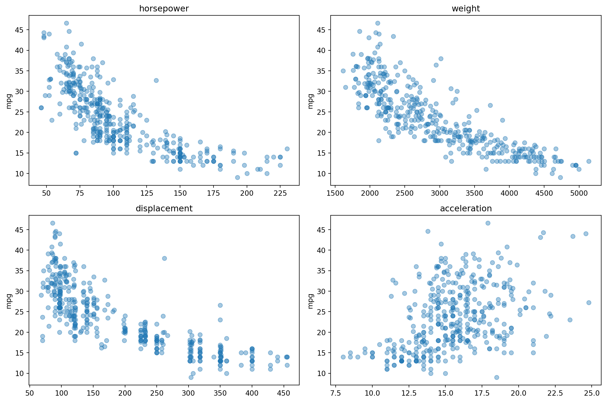
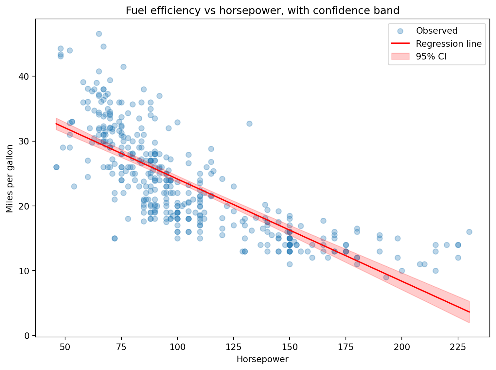
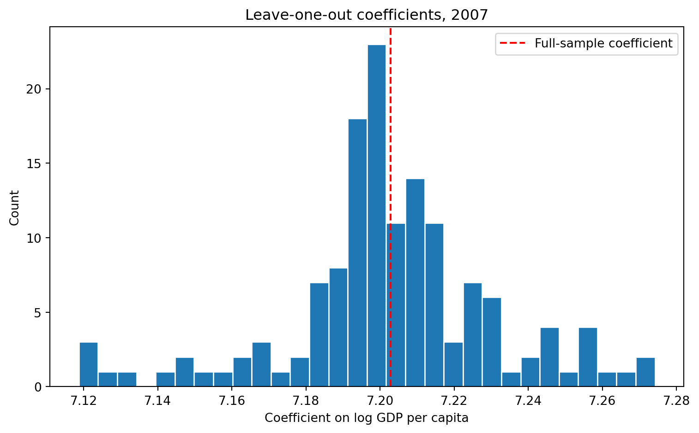

These exercises give you an opportunity to consolidate everything covered in Topic 5 before moving on. Many of these combine skills from several videos into a single task, and some may introduce new tools that were not shown in the videos — for these, you are expected to look up the documentation yourself, the same way you would when working independently.
The exercises are organised into three levels:
🟢 Warm-up — single-skill exercises to check your understanding of the basics.
🟡 Practice — exercises that combine two or more topics.
🔴 Challenge — multi-step tasks that may require you to combine ideas in ways you have not seen before.
🟢 Warm-up
Exercise 5.9.1
Fit a simple regression on the healthexp dataset.
import seaborn as snsimport numpy as npimport statsmodels.formula.api as smfhealthexp = sns.load_dataset("healthexp")
Fit a regression of Life_Expectancy on the log of Spending_USD and print the .summary().
What is the coefficient on the log of Spending_USD? Since the explanatory variable is in logs, the interpretation is: a 1% increase in health spending is associated with an increase in life expectancy of coefficient/100 years. How many years of life expectancy is a 10% increase in spending associated with?
What is the R-squared, and what does it tell you?
Solution
import seaborn as snsimport numpy as npimport statsmodels.formula.api as smfhealthexp = sns.load_dataset("healthexp")healthexp["log_spending"] = np.log(healthexp["Spending_USD"])model = smf.ols("Life_Expectancy ~ log_spending", data=healthexp).fit()print(model.summary())
Note that there are two equivalent ways to convert Spending_USD to logs: you can create the log-transformed column first, as done in the setup code above, or you can apply the transformation directly inside the model formula by writing Life_Expectancy ~ np.log(Spending_USD) — statsmodels understands function calls in formulas, as long as the function (here np.log) is imported. Try both and confirm they give the same result.
The coefficient on log_spending is about 2.6, meaning a 1% increase in health spending is associated with roughly 0.026 additional years of life expectancy. A 10% increase in spending is therefore associated with about 0.26 additional years — roughly three months.
The R-squared is about 0.58, meaning log spending alone explains a bit more than half of the variation in life expectancy across the country-year observations in this dataset.
Exercise 5.9.2
Extract specific values from the model in the previous exercise without using .summary().
Print only the coefficient on log_spending, as a single number.
Print only the 95% confidence interval for log_spending — both bounds.
Print the number of observations used in the regression. Note that is stored in the model attribute .nobs — confirm it matches what you would expect given the size of healthexp.
The model uses all 274 rows of healthexp, since neither variable has missing values. .nobs is one of many model attributes beyond those covered in the video — running dir(model) shows the full list, which is a useful trick whenever you wonder whether a fitted model already stores the quantity you need.
Exercise 5.9.3
Each of the two snippets below raises an error. For each one: run it, identify the error type, explain what went wrong, and fix it.
import seaborn as snsimport statsmodels.formula.api as smfmpg = sns.load_dataset("mpg").dropna(subset=["horsepower"])# Snippet Amodel = smf.ols("mpg ~ Horsepower", data=mpg).fit()
import seaborn as snsimport pandas as pdimport statsmodels.formula.api as smfmpg = sns.load_dataset("mpg").dropna(subset=["horsepower"])# Snippet A — fixed: correct column name casingmodel = smf.ols("mpg ~ horsepower", data=mpg).fit()print(model.params)
# Snippet B — fixed: predict requires a DataFrame with matching column namesnew_data = pd.DataFrame({"horsepower": [100, 150]})print(model.predict(new_data))
0 24.151388
1 16.259151
dtype: float64
Snippet A fails because the formula references Horsepower with a capital H, while the column in mpg is lowercase horsepower. The exact error type shown at the bottom of the traceback depends on your version of statsmodels — you may see a PatsyError wrapping a NameError, or another variant — but the message will always name the variable it could not find, along with a marker pointing at the offending part of the formula. The underlying cause is the same in all versions: formula variable names must match the DataFrame’s column names exactly, including case.
Snippet B fails because .predict() was given a plain list of numbers. The exact error message at the bottom of the traceback depends on your version of statsmodels, but the underlying cause is the same in all versions: when a model is estimated with a formula, .predict() needs to find the variable horsepowerby name in whatever you pass it. A plain list like [100, 150] has no column names, so the lookup fails — there is no way for statsmodels to know which variable those numbers are supposed to represent. The fix is to build a small DataFrame whose column name matches the formula exactly.
🟡 Practice
Exercise 5.9.4
Before fitting a multiple regression, it is good practice to look at how each candidate explanatory variable relates to the outcome.
import seaborn as snsimport statsmodels.formula.api as smfimport matplotlib.pyplot as pltmpg = sns.load_dataset("mpg").dropna(subset=["horsepower"])candidates = ["horsepower", "weight", "displacement", "acceleration"]
Create a 2x2 grid of panels, figsize=(12, 8). Loop over candidates and plot mpg (y-axis) against each candidate variable (x-axis) as a scatter plot with alpha=0.4, using the variable name as each panel’s title.
Based on the four panels, which variables look most strongly related to mpg? Do any of them look weakly related?
Fit a multiple regression of mpg on the three variables that looked most strongly related. Print the .summary(). Do the coefficients’ signs match what the scatter plots led you to expect?
Solution
import seaborn as snsimport statsmodels.formula.api as smfimport matplotlib.pyplot as pltmpg = sns.load_dataset("mpg").dropna(subset=["horsepower"])candidates = ["horsepower", "weight", "displacement", "acceleration"]# 1. Scatter gridfig, axes = plt.subplots(nrows=2, ncols=2, figsize=(12, 8))axes = axes.flatten()for i, var inenumerate(candidates): axes[i].scatter(mpg[var], mpg["mpg"], alpha=0.4) axes[i].set_title(var) axes[i].set_ylabel("mpg")plt.tight_layout()plt.show()

# 3. Multiple regression on the three strongest candidatesmodel = smf.ols("mpg ~ horsepower + weight + displacement", data=mpg).fit()print(model.summary())
OLS Regression Results
==============================================================================
Dep. Variable: mpg R-squared: 0.707
Model: OLS Adj. R-squared: 0.705
Method: Least Squares F-statistic: 312.0
Date: Mon, 13 Jul 2026 Prob (F-statistic): 5.10e-103
Time: 13:40:34 Log-Likelihood: -1120.6
No. Observations: 392 AIC: 2249.
Df Residuals: 388 BIC: 2265.
Df Model: 3
Covariance Type: nonrobust
================================================================================
coef std err t P>|t| [0.025 0.975]
--------------------------------------------------------------------------------
Intercept 44.8559 1.196 37.507 0.000 42.505 47.207
horsepower -0.0417 0.013 -3.252 0.001 -0.067 -0.016
weight -0.0054 0.001 -7.513 0.000 -0.007 -0.004
displacement -0.0058 0.007 -0.876 0.381 -0.019 0.007
==============================================================================
Omnibus: 37.603 Durbin-Watson: 0.859
Prob(Omnibus): 0.000 Jarque-Bera (JB): 49.946
Skew: 0.707 Prob(JB): 1.43e-11
Kurtosis: 4.029 Cond. No. 1.73e+04
==============================================================================
Notes:
[1] Standard Errors assume that the covariance matrix of the errors is correctly specified.
[2] The condition number is large, 1.73e+04. This might indicate that there are
strong multicollinearity or other numerical problems.
horsepower, weight, and displacement all show clear, strong negative relationships with mpg. acceleration shows a much weaker, more diffuse positive relationship.
The coefficients on horsepower and weight are negative, as the scatter plots suggested. Note that displacement may lose statistical significance in the multiple regression despite its strong-looking scatter plot — it is highly correlated with both engine power and weight, so once those are controlled for, displacement has little independent explanatory power left. This is a useful reminder that a strong bivariate relationship does not guarantee a variable matters once related variables are included.
Exercise 5.9.5
This exercise extends the previous one: instead of just looking at the four candidate variables, estimate a separate model for each one and compare their explanatory power. Each model should include the variable both in levels and as a squared term, since the scatter plots in the previous exercise suggested several of the relationships are curved.
import seaborn as snsimport pandas as pdimport statsmodels.formula.api as smfmpg = sns.load_dataset("mpg").dropna(subset=["horsepower"])candidates = ["horsepower", "weight", "displacement", "acceleration"]
Loop over candidates. In each iteration, use an f-string to build a formula that includes the variable in levels and as a squared term — for horsepower, the formula should be mpg ~ horsepower + I(horsepower**2). Print each formula as you go so you can confirm it is built correctly, fit the model, and append a dictionary with the variable name and the model’s R-squared to a list.
Convert the list to a DataFrame and sort it by R-squared in descending order.
Which variable gives the model with the highest explanatory power? Does the ranking match your visual impressions from the scatter plots in the previous exercise?
Solution
import seaborn as snsimport pandas as pdimport statsmodels.formula.api as smfmpg = sns.load_dataset("mpg").dropna(subset=["horsepower"])candidates = ["horsepower", "weight", "displacement", "acceleration"]# 1. Loop over candidates with an f-string formularesults = []for var in candidates: formula =f"mpg ~ {var} + I({var}**2)"print(formula) fit = smf.ols(formula, data=mpg).fit() results.append({"variable": var, "rsquared": fit.rsquared})# 2. Collect and sortresults_df = pd.DataFrame(results).sort_values("rsquared", ascending=False)print(results_df.round(4))
weight gives the model with the highest explanatory power (R-squared of about 0.72), followed closely by displacement and horsepower (both about 0.69). acceleration is far behind at about 0.19, which matches its weak, diffuse scatter plot from the previous exercise. Note how the f-string is doing the same job here as in Topic 5.3’s progressive-variable loop — the variable name is substituted into the formula template twice per iteration, once in levels and once inside the I() squared term, so all four model specifications are generated from a single line of code.
Exercise 5.9.6
The pipeline below is intended to estimate how horsepower affects fuel efficiency for American cars, but running it produces a confusing error at the final step.
Run the full pipeline. What error appears, and at which line? Does the error message alone tell you what the actual problem is?
Now run the pipeline one step at a time, checking the shape of the DataFrame after each step. At which step does something go wrong, and what is the actual bug?
Fix the bug and confirm the model now fits correctly.
Hint
The error appears at the model-fitting line, but the bug is not in the model formula. Check .shape after each filtering step — an empty DataFrame will pass silently through every subsequent step until something finally tries to compute with it.
Solution
import seaborn as snsimport statsmodels.formula.api as smfmpg = sns.load_dataset("mpg").dropna(subset=["horsepower"])# Step-by-step diagnosisstep1 = mpg[mpg["origin"] =="USA"]print("After origin filter:", step1.shape)
The pipeline fails at the model-fitting line with a ValueError about a “zero-size array” — a message that says nothing about filtering, string casing, or the actual cause. This is a classic case of an error surfacing far downstream of the bug that caused it.
Checking .shape after the first filter reveals the problem immediately: mpg[mpg["origin"] == "USA"] returns 0 rows. The origin values in this dataset are lowercase — "usa", not "USA" — so the filter matches nothing. Crucially, filtering to zero rows is not an error in pandas; the empty DataFrame flows silently through the second filter and the column creation, and only crashes when statsmodels finally tries to estimate a model on no data.
Changing "USA" to "usa" fixes the pipeline. The general lesson: when a pipeline fails with a confusing error, do not stare at the failing line — run the pipeline step by step and check the intermediate results, because the bug is often several steps upstream of where the error finally appears.
Exercise 5.9.7
In Topic 5.2 you plotted a regression line using model.predict(). This exercise adds a confidence band around that line, using a method you will need to find in the documentation.
import seaborn as snsimport pandas as pdimport numpy as npimport statsmodels.formula.api as smfimport matplotlib.pyplot as pltmpg = sns.load_dataset("mpg").dropna(subset=["horsepower"])model = smf.ols("mpg ~ horsepower", data=mpg).fit()hp_vals = np.linspace(mpg["horsepower"].min(), mpg["horsepower"].max(), 100)new_data = pd.DataFrame({"horsepower": hp_vals})
model.predict() returns only the predicted values, with no measure of uncertainty. Look up the statsmodels method get_prediction() (searching “statsmodels get_prediction summary_frame” is a good starting point), and use it to obtain a table containing the predicted values together with their confidence interval.
Create a scatter plot of the observed data with alpha=0.3, overlay the predicted line in red, and add the 95% confidence interval for the regression line as a shaded band using fill_between().
Hint
get_prediction() is called on the fitted model, the same way .predict() is: model.get_prediction(new_data). The result is not yet a table — call .summary_frame() on it to convert it into a DataFrame you can work with, e.g. model.get_prediction(new_data).summary_frame(). Look at the resulting columns to see which ones contain the predicted values and which contain the confidence interval bounds.
Solution
import seaborn as snsimport pandas as pdimport numpy as npimport statsmodels.formula.api as smfimport matplotlib.pyplot as pltmpg = sns.load_dataset("mpg").dropna(subset=["horsepower"])model = smf.ols("mpg ~ horsepower", data=mpg).fit()hp_vals = np.linspace(mpg["horsepower"].min(), mpg["horsepower"].max(), 100)new_data = pd.DataFrame({"horsepower": hp_vals})# 1. Prediction with uncertaintypred = model.get_prediction(new_data)frame = pred.summary_frame()print(frame.head().round(2))
# 2. Plot with confidence bandfig, ax = plt.subplots(figsize=(8, 6))ax.scatter(mpg["horsepower"], mpg["mpg"], alpha=0.3, label="Observed")ax.plot(hp_vals, frame["mean"], color="red", label="Regression line")ax.fill_between(hp_vals, frame["mean_ci_lower"], frame["mean_ci_upper"], color="red", alpha=0.2, label="95% CI")ax.set_xlabel("Horsepower")ax.set_ylabel("Miles per gallon")ax.set_title("Fuel efficiency vs horsepower, with confidence band")ax.legend()plt.tight_layout()plt.show()

summary_frame() returns six columns: mean (the predicted value), mean_se (its standard error), mean_ci_lower and mean_ci_upper (the 95% confidence interval for the regression line itself), and obs_ci_lower and obs_ci_upper (a 95% prediction interval for a single new observation). These last two are considerably wider than the confidence interval used above: the confidence interval expresses uncertainty about where the average mpg lies at a given horsepower — how precisely the line itself is estimated — while the prediction interval expresses where a single new car’s mpg is likely to fall, which is wider because individual cars scatter around the line even if the line’s position were known exactly. If you want to show the range within which most individual cars are expected to fall, rather than the range for the average, obs_ci_lower/obs_ci_upper are the columns to use instead.
By the way: the standard errors underlying these intervals assume the residual variance is constant across all horsepower levels. In practice, analysts often relax this assumption by requesting robust standard errors, which in statsmodels takes a single extra argument: smf.ols(...).fit(cov_type="HC1"). The coefficients are identical; only the standard errors (and therefore confidence intervals and p-values) change. This is standard practice in empirical economics, and worth knowing exists even though the details belong in an econometrics course rather than here.
Exercise 5.9.8
Build a regression table comparing two models on the healthexp data, and customize it with Stargazer.
import seaborn as snsimport numpy as npimport statsmodels.formula.api as smffrom stargazer.stargazer import Stargazerhealthexp = sns.load_dataset("healthexp")healthexp["log_spending"] = np.log(healthexp["Spending_USD"])
Fit two models: Life_Expectancy ~ log_spending, and Life_Expectancy ~ log_spending + C(Country). Pass both to Stargazer().
Rename log_spending to a reader-friendly label, give the table a title, and set the dependent variable’s display name.
The country dummies clutter the table. Look through Stargazer’s available methods (the GitHub page lists them) and find a way to control which covariates are displayed, so that only log_spending appear. Add an additional line in the table indicating (with No and Yes) whether the country fixed effects are included in the model.
Solution
import seaborn as snsimport numpy as npimport statsmodels.formula.api as smffrom stargazer.stargazer import Stargazerhealthexp = sns.load_dataset("healthexp")healthexp["log_spending"] = np.log(healthexp["Spending_USD"])m1 = smf.ols("Life_Expectancy ~ log_spending", data=healthexp).fit()m2 = smf.ols("Life_Expectancy ~ log_spending + C(Country)", data=healthexp).fit()table = Stargazer([m1, m2])# 2. Add title and modify labelstable.rename_covariates({"log_spending": "Log health spending"})table.title("Health Spending and Life Expectancy")table.dependent_variable_name("Life Expectancy (years)")# 3. Show only log_spendingtable.covariate_order(["log_spending"])table.add_line("Country FE", ["No", "Yes"])table
Health Spending and Life Expectancy
Dependent variable: Life Expectancy (years)
(1)
(2)
Log health spending
2.619***
3.157***
(0.135)
(0.052)
Country FE
No
Yes
Observations
274
274
R2
0.579
0.946
Adjusted R2
0.578
0.945
Residual Std. Error
2.129 (df=272)
0.769 (df=267)
F Statistic
374.430*** (df=1; 272)
780.963*** (df=6; 267)
Note:
*p<0.1; **p<0.05; ***p<0.01
Notice that covariate_order() — the same method used in Topic 5.4 to reorder covariates — also filters them: any covariate not included in the list is simply omitted from the display. This is the standard way to suppress a large block of dummy coefficients while noting their presence in a table row.
🔴 Challenge
Exercise 5.9.9
In Topic 5.3, the code for looping over subgroups was written out in full each time it was needed. This exercise refactors that logic into a reusable function with input validation and error handling.
import seaborn as snsimport pandas as pdimport statsmodels.formula.api as smfmpg = sns.load_dataset("mpg").dropna(subset=["horsepower"])
Write a function fit_by_group(data, formula, group_col, coef_name, min_obs=5) that loops over the unique values of group_col, fits formula on each subset, and returns a DataFrame with one row per group containing the group name, the coefficient on coef_name, and the number of observations. min_obs should have a sensible default value.
Add input validation: if group_col is not a column in data, print a clear error message explaining the problem and return None immediately, without attempting to fit anything.
Before fitting each group, check whether the subset has at least min_obs observations. If it does not, print a message naming the group and skip it — a group with too few rows does not reliably fail; a regression on 1 or 2 observations can succeed “silently” with a meaningless perfect fit, so this needs to be checked explicitly rather than left to error handling.
Even with this check in place, a group can still fail to fit for reasons you have not anticipated — for example, if the explanatory variable happens to be entirely missing for one group. Wrap the model fitting itself in a try/except block that prints a message naming the group and the error type, and continues with the rest.
Demonstrate the function: call it with two different formulas (e.g. mpg ~ horsepower and mpg ~ weight), once with a misspelled group column, and once on a version of the data where horsepower has been set to missing for one entire group.
Solution
import seaborn as snsimport pandas as pdimport numpy as npimport statsmodels.formula.api as smfmpg = sns.load_dataset("mpg").dropna(subset=["horsepower"])def fit_by_group(data, formula, group_col, coef_name, min_obs=5):# 2. Input validationif group_col notin data.columns:print(f"Error: column '{group_col}' not found in data")returnNone results = []for group in data[group_col].unique(): subset = data[data[group_col] == group]# 3. Minimum size checkiflen(subset) < min_obs:print(f"Skipping group '{group}': only {len(subset)} observations (minimum is {min_obs})")continue# 4. Catch anything else unanticipatedtry: fit = smf.ols(formula, data=subset).fit() results.append({"group": group,"coef": fit.params[coef_name],"n": len(subset), })exceptExceptionas e:print(f"Skipping group '{group}': {type(e).__name__}")return pd.DataFrame(results)# 5. Two different formulas with one functionprint(fit_by_group(mpg, "mpg ~ horsepower", "origin", "horsepower"))
group coef n
0 usa -0.121320 245
1 japan -0.230043 79
2 europe -0.221835 68
group coef n
0 usa -0.006854 245
1 japan -0.010719 79
2 europe -0.006850 68
# Misspelled group column: prints a message and returns None, nothing crashesresult = fit_by_group(mpg, "mpg ~ horsepower", "region", "horsepower")print(result)
Error: column 'region' not found in data
None
# A group where horsepower is entirely missing — the try/except catches thismpg_missing = mpg.copy()mpg_missing.loc[mpg_missing["origin"] =="japan", "horsepower"] = np.nanprint(fit_by_group(mpg_missing, "mpg ~ horsepower", "origin", "horsepower"))
Skipping group 'japan': ValueError
group coef n
0 usa -0.121320 245
1 europe -0.221835 68
Notice why two separate checks are needed rather than relying on try/except alone. Fitting a regression on 1 or 2 observations does not raise an error or even a warning — it succeeds and returns a meaningless “perfect fit,” since a straight line can always be drawn exactly through 1 or 2 points. Conversely, the missing group column is a structural problem with the function call itself, discovered before any fitting is attempted, so it is checked once up front rather than inside the loop. What try/exceptis good for is exactly what step 5’s last example shows: a case you genuinely did not anticipate — here, a group whose explanatory variable is entirely missing, which still has enough rows to pass the size check but fails once statsmodels actually tries to fit on data with no valid values. Each of the three safeguards catches a different kind of problem; none of them is a substitute for the others.
Exercise 5.9.10
How sensitive is a regression result to any single observation? A simple and powerful way to check is a leave-one-out analysis: re-estimate the model once for every observation, each time dropping that one row, and look at how much the coefficient moves.
import pandas as pdimport numpy as npimport statsmodels.formula.api as smfimport matplotlib.pyplot as pltgapminder = pd.read_csv("data/gapminder.csv")gap07 = gapminder[gapminder["year"] ==2007].copy().reset_index(drop=True)gap07["log_gdp"] = np.log(gap07["gdpPercap"])
Fit lifeExp ~ log_gdp on the full 2007 cross-section and store the coefficient on log_gdp as full_coef.
Loop over gap07. In each iteration, drop a single row (e.g., country), refit the model on the remaining data, and append a dictionary with the dropped country’s name and the resulting coefficient to a list. Convert the list to a DataFrame called loo_df.
Plot a histogram of the leave-one-out coefficients with bins=30, and add a vertical reference line at full_coef.
Which single country moves the coefficient the most when excluded? Compute the absolute difference between each leave-one-out coefficient and full_coef, and print the five most influential countries.
Based on the histogram and the size of the largest deviations, would you describe this regression result as robust to individual observations, or driven by a few influential countries?
Hint
To drop exactly one row at a time inside a loop, you need something to loop over that identifies each row individually, and a way to remove just that row from the DataFrame. Looping over gap07.index gives you one such identifier per iteration, and .drop(index=...) removes the row with that label, returning a new DataFrame with everything else intact.
Solution
import pandas as pdimport numpy as npimport statsmodels.formula.api as smfimport matplotlib.pyplot as pltgapminder = pd.read_csv("data/gapminder.csv")gap07 = gapminder[gapminder["year"] ==2007].copy().reset_index(drop=True)gap07["log_gdp"] = np.log(gap07["gdpPercap"])# 1. Full-sample coefficientfull_coef = smf.ols("lifeExp ~ log_gdp", data=gap07).fit().params["log_gdp"]print(round(full_coef, 3))
7.203
# 2. Leave-one-out looploo_results = []for i in gap07.index: subset = gap07.drop(index=i) fit = smf.ols("lifeExp ~ log_gdp", data=subset).fit() loo_results.append({"dropped": gap07.loc[i, "country"],"coef": fit.params["log_gdp"], })loo_df = pd.DataFrame(loo_results)
# 3. Histogram of leave-one-out coefficientsfig, ax = plt.subplots(figsize=(8, 5))ax.hist(loo_df["coef"], bins=30, edgecolor="white")ax.axvline(full_coef, color="red", linestyle="--", label="Full-sample coefficient")ax.set_xlabel("Coefficient on log GDP per capita")ax.set_ylabel("Count")ax.set_title("Leave-one-out coefficients, 2007")ax.legend()plt.tight_layout()plt.show()

# 4. Most influential countriesloo_df["diff"] = (loo_df["coef"] - full_coef).abs()print(loo_df.sort_values("diff", ascending=False).head(5).round(4))
The most influential single countries are Mozambique, Sierra Leone, and Zambia — countries whose life expectancy in 2007 was far below what their GDP alone would predict. Dropping any one of them pulls the coefficient down by about 0.08.
The result is robust. All 142 leave-one-out coefficients fall in a narrow band around 7.2, and even the most influential single country shifts the coefficient by only about 1% of its value. If instead the histogram had shown a wide spread, or a few coefficients far from the rest, that would be a warning that the headline result depends on a handful of specific observations — exactly the situation this technique is designed to detect.
Exercise 5.9.11
Everything in this topic used smf.ols(), which models a continuous outcome. But many interesting outcomes are binary — survived or not, purchased or not, defaulted or not. This exercise introduces logistic regression, which is the standard model for binary outcomes as it constrains predictions to lie between 0 and 1.
import seaborn as snsimport pandas as pdimport numpy as npimport statsmodels.formula.api as smfimport matplotlib.pyplot as plttitanic = sns.load_dataset("titanic").dropna(subset=["age"])
Look up smf.logit() in the statsmodels documentation. Fit a logistic regression of survived on age, fare, C(pclass), and C(sex). Print the .summary().
Logit coefficients are log-odds, which are hard to interpret directly. Apply np.exp() to model.params to convert them to odds ratios. An odds ratio above 1 means the odds of survival increase; below 1 means they decrease. By what factor do the odds of survival change for each additional year of age?
Build a grid of predicted survival probabilities across the full range of age, holding fare at its median, separately for every combination of pclass and sex. For each combination, predict the survival probability and plot all six resulting probability curves on one chart with a legend.
Using the full dataset, generate predicted probabilities for every passenger, convert them to a predicted outcome using a 0.5 threshold, and compute the share of passengers correctly classified.
Compare this to a naive baseline that always predicts the more common outcome (survived or died, whichever is more frequent). Does the model do meaningfully better than this baseline?
Hint
For step 3, you need one predicted curve per combination of pclass and sex — six combinations in total. A nested for loop is a natural way to generate them: an outer loop over the unique values of pclass, and an inner loop over the unique values of sex. Inside the innermost part of the loop, build a small DataFrame with age set to your range of values and fare set to the (constant) median, plus the current pclass and sex from the loop. Call model.predict() on this DataFrame and plot the result before moving to the next combination.
Solution
import seaborn as snsimport pandas as pdimport numpy as npimport statsmodels.formula.api as smfimport matplotlib.pyplot as plttitanic = sns.load_dataset("titanic").dropna(subset=["age"])# 1. Fit the logit modellogit_model = smf.logit("survived ~ age + fare + C(pclass) + C(sex)", data=titanic).fit()print(logit_model.summary())
Intercept 41.368
C(pclass)[T.2] 0.279
C(pclass)[T.3] 0.079
C(sex)[T.male] 0.081
age 0.964
fare 1.001
dtype: float64
# 3. Predicted probability curves by class and sex, over agemedian_fare = titanic["fare"].median()age_vals = np.linspace(titanic["age"].min(), titanic["age"].max(), 50)fig, ax = plt.subplots(figsize=(9, 6))for pclass insorted(titanic["pclass"].unique()):for sex in titanic["sex"].unique(): new_data = pd.DataFrame({"age": age_vals,"fare": median_fare,"pclass": pclass,"sex": sex }) predicted_prob = logit_model.predict(new_data) ax.plot(age_vals, predicted_prob, label=f"Class {pclass}, {sex}")ax.set_xlabel("Age")ax.set_ylabel("Predicted probability of survival")ax.set_title("Predicted survival probability by age, class, and sex")ax.legend(fontsize=8)plt.tight_layout()plt.show()
The odds ratio for age is about 0.96, meaning each additional year of age multiplies the odds of survival by roughly 0.96 — a small but steady decrease. The odds ratio for C(sex)[T.male] is about 0.08, meaning the odds of survival for a male passenger are roughly 92% lower than for a female passenger with the same age, fare, and class.
The six curves separate clearly by class and sex, with female first-class passengers having the highest predicted probability across almost the entire age range, and male third-class passengers the lowest. All six curves slope gently downward with age, reflecting the negative age coefficient.
The model correctly classifies about 79% of passengers.
Always predicting the majority outcome (died, since roughly 59% of passengers did not survive) achieves about 59% accuracy. The model’s 79% is a substantial improvement over this baseline, confirming that age, fare, class, and sex together carry real predictive information about survival — not just statistically significant coefficients, but genuine ability to distinguish who survived from who did not.
Exercise 5.9.12
This final exercise is a mini-capstone spanning Topics 3, 4, and 5: import and wrangle real data, visualize a relationship, estimate a set of models, and export a publication-style table.
Research question: Is there a relationship between unemployment and inflation in the US — the famous “Phillips curve”?
Import the FRED monthly data for all seven decades from Github, using the loop-based import pattern as before.
Wrangle: combine the decade files, convert DATE to datetime, and sort. Resample to annual means, extract the year, and compute annual inflation as the percentage change in the annual mean CPI. Add a decade column, and drop rows with missing values in inflation, UNRATE, or FEDFUNDS.
Visualize: create a scatter plot of inflation (y-axis) against UNRATE (x-axis), with full labels. Does the raw relationship look positive, negative, or unclear?
Model: estimate three specifications — inflation ~ UNRATE, adding FEDFUNDS, and adding C(decade) — storing them in a list using the progressive-formula loop pattern from Topic 5.3.
Export: build a Stargazer table of all three models, rename the covariates to reader-friendly labels, add a title, and display only the unemployment and federal funds coefficients (noting the decade indicators in a custom row).
Interpret: what happens to the coefficient on unemployment across the three specifications? The simple textbook Phillips curve predicts a negative relationship. Do you find one?
Solution
import pandas as pdimport numpy as npimport statsmodels.formula.api as smffrom stargazer.stargazer import Stargazerimport matplotlib.pyplot as plt# 1. Import and wranglebase_url ="https://raw.githubusercontent.com/isabelhovdahl/skl401/refs/heads/master/data/FRED/"decades = [1950, 1960, 1970, 1980, 1990, 2000, 2010]fred_dfs = [pd.read_csv(base_url +f"FRED_monthly_{d}.csv") for d in decades]fred = pd.concat(fred_dfs).reset_index(drop=True)fred["DATE"] = pd.to_datetime(fred["DATE"])fred = fred.sort_values("DATE")annual = fred.set_index("DATE").resample("YE").mean().reset_index()annual["year"] = annual["DATE"].dt.yearannual["inflation"] = annual["CPI"].pct_change() *100annual["decade"] = (annual["year"] //10) *10annual = annual.dropna(subset=["inflation", "UNRATE", "FEDFUNDS"])print(annual.shape)
(66, 9)
# 2. Visualizewith plt.style.context('ggplot'): fig, ax = plt.subplots(figsize=(8, 6)) ax.scatter(annual["UNRATE"], annual["inflation"], alpha=0.6) ax.set_xlabel("Unemployment rate (%)") ax.set_ylabel("Annual inflation rate (%)") ax.set_title("Inflation vs unemployment, annual US data 1951–2019") plt.tight_layout() plt.show()
Task 2: The raw scatter shows, if anything, a mildly positive relationship — years with higher unemployment do not systematically show lower inflation.
Task 5: In the simplest model, the unemployment coefficient is positive — the opposite of the textbook Phillips curve. It remains positive after adding the federal funds rate, and even becomes statistically significant once decade indicators are added. Although we do not uncover the famous empirical finding of the Phillips curve, this is not surprising since we are estimating very simplified regression models. The broader lesson for this course is the workflow itself — import, wrangle, visualize, model, export — which is a complete data analysis pipeline.